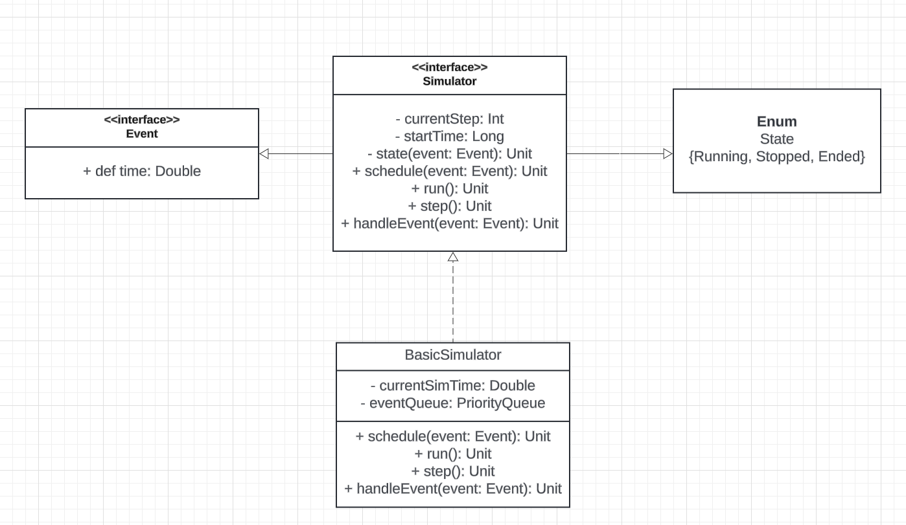
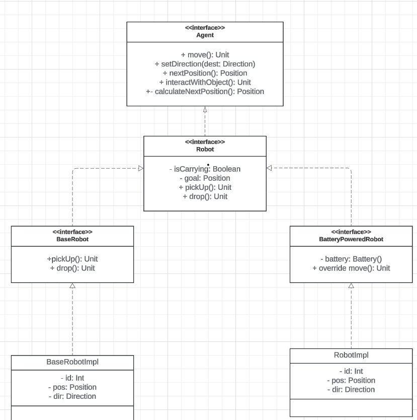
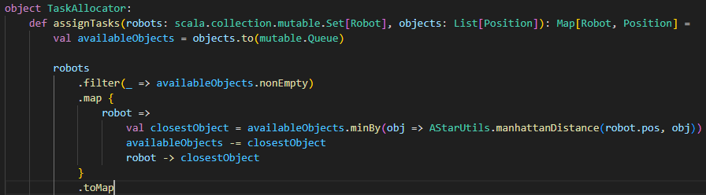

Introduction
In today's dynamic world, the study and application of swarm intelligence have become increasingly relevant across various fields, from optimization problems to robotics. To facilitate experimentation and exploration within this domain, a discrete event simulation DES framework was developed, with a core designed to be technology-agnostic. This framework prioritizes modularity, extensibility, and flexibility, enabling the seamless integration of diverse swarm intelligence strategies without necessitating alterations to the simulation core. Swarm intelligence is a collective behavior exhibited by decentralized, self-organized systems, such as social insect colonies or flocks of birds. These systems demonstrate emergent properties that enable them to solve complex problems more efficiently than individual agents, often drawing inspiration from natural phenomena. These are the swarms chosen for this project:
SWARM ROBOTICS
Swarm robotics is a field that involves the coordination of multiple robots to achieve a common goal. These robots interact with each other and their environment to perform tasks that would be challenging or impossible for a single robot. In this particular case I chose to make robots collect objects in a 2D environment, by calculating the optimal path in order to save energy and time. It can be seen as an object picking problem, like in a warehouse, where robots have to collect objects and bring them to a specific location.
ANT COLONY OPTIMIZATION
Ant colony optimization (ACO) is a metaheuristic optimization algorithm inspired by the foraging behavior of ants. ACO algorithms are used to solve combinatorial optimization problems by simulating the behavior of ant colonies searching for food. It differs from swarm robotics because, while in the case of swarm robots the robots follow a precise path with very low variability, in the case of ACO the agents move in the environment based on the pheromones released by other ants.
PARTICLE SWARM OPTIMIZATION
Particle swarm optimization (PSO) is a population-based optimization algorithm inspired by the social behavior of birds flocking or fish schooling, where individuals adjust their positions based on their own experience and the experience of their neighbors. PSO algorithms are used to solve optimization problems by simulating the movement of particles in a search space, with each particle representing a potential solution to the problem.
Project Objectives
The primary goal of this project was to create a simulation engine detached from specific swarm intelligence strategies. This engine serves as a foundation for the development and integration of various swarm intelligence approaches, allowing for agile experimentation and comparison.
- Simulation Engine Development: Creation of a versatile simulation engine capable of supporting different swarm intelligence strategies, independent of their implementation specifics.
- Modularity: Ensuring that the framework's architecture allows for the easy integration of new swarm intelligence strategies, promoting adaptability and scalability.
- Extensibility: Designing the system in a manner that facilitates the addition of new functionalities and features, catering to evolving research and application needs.
- Implementation of Classic Strategies: Incorporating well-established swarm intelligence strategies such as Ant Colony Optimization (ACO), Swarm Robotics, Boids, among others, to provide a foundational set of examples and benchmarks.
- Graphical Interface: Developing a user-friendly graphical interface that enables visualization of simulation results, enhancing usability and comprehension.
- Statistical Analysis: Implementing statistical calculations to generate insightful reports, aiding in the evaluation and comparison of different swarm intelligence strategies.
Development Methodology
The development of the simulation engine and swarm intelligence strategies was guided by the principles of test-driven development (TDD), build automation, and continuous integration.
Test driven development
Test-driven development (TDD) is a software development approach that emphasizes writing tests before writing the actual code. This practice ensures that the code is testable, reliable, and meets the specified requirements. It was strictly followed the red-green-refactor rule, which involves writing a failing test (red), implementing the code to pass the test (green), and refactoring the code to improve its design and maintainability. The tests were written using ScalaTest, a testing framework for Scala, which provides a wide range of features for writing different types of tests, such as unit tests, integration tests, and acceptance tests. Codium was also used to verify test coverage, providing insights into the effectiveness of the test suite and identifying areas that require additional testing.
Build automation
In this project, SBT (Scala Build Tool) was used to automate the build process, manage dependencies, and run tests. SBT simplifies the development workflow by providing a unified interface for compiling, testing, and packaging the code. It also facilitates the integration of third-party libraries and tools, enhancing productivity and code quality.
Continuos integration
Travis CI was used for continuous integration, automating the build and test process for every code commit. This practice ensures that the codebase remains stable and functional throughout the development cycle, enabling early detection of bugs and issues. The integration with Travis CI also provides insights into the test results and code coverage, helping maintain a high-quality codebase.
Technologies used (recap)
- Travis CI: Continuous integration service for automated builds and tests.
- ScalaTest: Testing framework for Scala.
- Scoverage: Tool for measuring code coverage.
- Codium: Service for test coverage verification using artificial intelligence.
- SBT: Build automation tool for Scala projects.
System Analysis
Business requirements
- Provide a solid discrete event simulator which allows users to experiment without encountering problems
- Client-side provide an extensible and valid framework for academic purpouse
Functional requirements
Simulation Type Selection:
- The user can choose from three types of simulations:
- Robot Swarm
- Particle Swarm Optimization (PSO)
- Ant Colony Optimization (ACO)
Simulation Parameters Configuration:
- Robot Swarm:
- The user can select the number of agents (robots).
- The items to be collected are randomly distributed on the map.
- Particle Swarm Optimization (PSO):
- The user can set parameters related to the fitness function.
- The simulation seeks the optimal solution based on these parameters.
- Ant Colony Optimization (ACO):
- The ant colony searches for food.
- The simulation ends when all the food has been brought back to the bases (default configuration).
Simulation Execution:
- The user starts the selected simulation.
- During execution, the current step count is displayed.
- Real-time statistics related to the ongoing simulation are shown.
Statistics Display:
- During the simulation, the user can see updated statistics, which may include:
- Current simulation status (e.g., position of robots/ants).
- Number of steps taken.
- Progress towards the objective (e.g., number of items collected or amount of food transported).
Solution Output:
- At the end of the simulation, a solution is returned:
- Robot Swarm: Number of items collected and the path followed by the robots.
- Particle Swarm Optimization (PSO): Optimal solution found based on the fitness function.
- Ant Colony Optimization (ACO): Final state of the colony and amount of food transported to the bases.
User Actions:
- Start and Stop Simulations: The user can start or stop a simulation at any time.
- Modify Parameters: The user can configure the specific parameters of each type of simulation before starting it.
- Monitor Real-Time Status: During execution, the user can observe the step count and real-time statistics.
- View and Analyze Results: At the end of the simulation, the user can view the final results and use them for further analysis or decision-making.
Non-functional requirements
- Raw interface, it has to work correctly but it's not the main focus
- Good performance on simulations with small amount of objects (single thread execution)
Architectural Design
The chosen architecture employs the Model View Controller (MVC) pattern, which ensures flexibility, modularity, and most importantly, allows the creation of an agnostic core with a well-defined structure. To this end, an abstract structure has been developed to provide base classes for various swarms that extend them. By leveraging patterns such as the Template Method, code reuse is maximized, making the code structure much more concise. Through MVC, the separation of concerns is prioritized, ensuring flexibility and allowing modifications to portions of the code independently from others. The simulation is governed by the controller, which utilizes the logic implemented in the model.

Detailed Design
Des simulator (core)
This section discusses the design of the project core, which is a des, agnostic simulator that is able to process a series of discrete events by exploiting a priority queue. Event
Event trait represents the base structure of an event, which is defined by its time, it favours type-safety.State management
The simulator uses State, an enumeration useful to track its execution status and to manage the simulation lifecycle.Simulation
Simualtor trait is projects' core, it defines the basic structure of a simulation, which is composed of a priority queue of events and a state. The simulation is started by calling the start method, which sets the state to running and processes the events in the queue until the state changes to stopped. Basic simulator is a concrete implementation of the simulator trait, which serves these purposes:- provide a base, working implementation of a DES, while incapsulating simulation state and event handling;
- leverage the Template Method pattern to define the basic execution flow, while allowing subclasses to modify or extend specific steps, in order to fit the individual swarm;
- separate concerns, the handleEvent method is intended to be overridden to implement specific behaviours, while the simulator remains unchanged.
Environment Structure
The system simulates a virtual environment where agents and objects interact within a defined grid. The Grid
trait acts as a blueprint for any grid-based environment. The design focuses on modularity, flexibility, and maintainability
to accommodate future enhancements and changes. The simulation occurs within the Environment class, which extends
the Grid trait. The environment is represented by a matrix of dimensions height x width, where cells
can contain agents and objects. Agents move and interact with objects based on specific logic. By leveraging design patterns
like the Template Method and principles such as composition over inheritance, the system can easily accommodate future
enhancements and changes.
Composition
Since the Environment can easily become a god-class, having to deal with a lot of dynamics, the use of composition
is very useful. It enhances the separation of concerns principle by allowing independent component testing. It also favors
encapsulation, which hides the complexity of these operations from the Environment class, making it simpler and more
focused on high-level functionality.
Template method
As can be seen in the Environment class, the moveAgent method is based off 3 methods, preMoveActions(agent: Agent), postMoveActions(agent: Agent) and interactWithObject(agent: Agent)
which are implemented by the extending classes. This allows for a more concise code structure and promotes code reuse.
Detailed robot
This section aims to describe the detail design of the robot (robotswarm scope), which is perhaps the most complex agent, is explored in depth, in this regard. Key aspects of this design include the use of scala's traits for modularity, enums for type safety and companion objects for controlled object creation and incapsulation. The focus was to favour flexibility and maintainability, allowing for easy extension and modification of the robot's behaviour. Encapsulation
The design leverages encapsulation effectively by employing nested classes within the Robot companion object, this approach hides implementation details and ensures that the internal workings of the robot are not exposed. By keeping BaseRobotImpl and RobotImpl private as inner classes of the Robot object, the design enforces encapsulation and prevents direct access to these classes from external sources.Trait composition
The Robot trait is composed of multiple traits, each responsible for a specific aspect of the robot's functionality. The baseRobot trait implements basic robot functionalities, by extending the Robot trait. This trait is intended to be used by other traits or classes to provide a foundation without needing to duplicate the implementation. The batteryPowered trait adds complexity, by expliciting battery management. By using abstract override it extends the behaviour of the move method.Design patters used
The apply methods in the companion object facilitate the Robot's instances creation, by providing a factory method for the creation of different types of robots. The trait composition is linked with the strategy pattern, as it allows for the dynamic selection of behaviours at runtime. The template method pattern is also used, as the move method is defined in the Robot trait and implemented in the extending classes.Ant swarm on detail
The AntSwarmSimulator system simulates a virtual environment where ants, represented as agents, interact with objects like food sources and pheromones on a grid. Since it's a core's extension, the design is similar to the RobotSwarmSimulator, with some differences due to the implementation specifics.
Pheromone manager
The PheromoneManager manages the pheromone levels in the environment, ensuring that pheromones decay over time and are increased when ants deposit them. The manager handles the pheromones, maintaining both the strength of the pheromones and their sources (ant IDs).Ant
Ant, as shown in the UML diagram, is a class that extends Agent and abstracts the behavior of an ant. Specifically, each ant stores:- the position of the nest, which is a predefined point in the environment where it must deposit the collected food
- the state `carryingFood`; if the ant has collected food, it will attempt to deposit it, otherwise, it will search for food by following pheromones.
Particle swarm architecture
Even though pso swarm is more interesting implementation wise, it's still important to notice some key architecture aspects, and choices. As can be seen from the diagram, in order to build the PSO swarm environment, the builder pattern was used, due to high number of parameters needed. In order to favour flexibility, the PSOEnvironment is composed of multiple traits, each responsible for a specific aspect of the PSO swarm functionality. Position utils provides utility methods for handling particle positions, while the calculateVelocity trait calculates the velocity of particles based on their current position and the global best position.Implementation
A* algorithm
One of the core features of the project is the artificial intelligence implemented for the robot swarm. In particular, I chose to use the A* algorithm for finding the optimal path from point A to point B. Since the robot operates in a 2D environment, I implemented the A* algorithm to consider only horizontal and vertical movements. For each robot, the path to optimally reach the target was calculated in advance. To achieve this, it was necessary to also create a taskAllocator, which, based on a distance calculation, assigns tasks to robots (one-to-one with objects) in an optimal manner. The paths were converted into iterators so that each robot can move towards the target at each step. Specifically, the iterator is reversible, allowing the use of the previous() function to go backward if needed. The challenge lies in the fact that:
- Robots must collect only their own objects;
- The code shown indicates the main method, omitting some private methods for clarity.
Architecture
Simple and straightforward, just 2 main classes and some utilities are enough to implement the A* algorithm. The main classes are:
Findpath
The findPath method is the implementation of the AStar algorithm. The mechanisms and choices are explained below:
Priority queue
A mutable priority queue was used to keep track of nodes to be evaluated, prioritized by their fscore. This ensures that the node with the lowest estimated total cost is processed first.Data structures
- cameFrom is a map to reconstruct the path once the goal is reached. It records the most efficient predecessor of each node;
- gscore is a map storing the cost of the path from the start node to each node;
- fscore is a map, storing the estimated total cost to reach the goal from each node. Initialized similarly to gscore.
Heuristic
The heuristic used is the Manhattan distance, which is suitable for environments where movements are restricted to horizontal and vertical directions.Algorithm
- Initialize the starting node with a gScore of 0 and an fscore of +infinite, based on the Manhattan distance to the goal;
- continuosly dequeue the node with the lowest fscore from the openSet and check if it is the goal node;
- for each neighbor of the current node, if it isn't an obstacle, calculate the tentative gscore and update it if the new path is shorter;
- update the cameFrom, gScore and fScore maps accordingly and add the neighbor to the openSet if it's not already present.
Performance
he priority queue operations are efficient but can be impacted by the number of nodes. In practice, the A* algorithm performs well with appropriate heuristics and can handle large-scale environments effectively. Optimizations may include using more sophisticated data structures or heuristics tailored to specific environments.Task allocator
The TaskAllocator object is designed to assign tasks to a set of robots based on their proximity to a list of objects. The core functionality is implemented in the assignTasks method, which uses a greedy approach to ensure each robot is allocated the closest available object. This approach is straightforward and effective for scenarios where tasks need to be dynamically assigned based on real-time conditions. Particle swarm optimization (PSO)
 Fields:
Fields:
globalBestis the best position found by all particles so far;globalBestFitnessis the fitness value associated with the globalBest, initialized to the highest possible value
nextPositioncomputes the particle's next position, based on its velocity. The new position is bounded and must be valid;updatePersonalBests(particle: Particle)if the particle's current position has better fitness value than its personal best, it updates it;updateGlobalBests(particle: Particle)same as updatePersonalBests but with global best as landmark;preMoveActions(agent: Agents)executes a set of actions before a particle moves, in this case, it calculates nextPosition;postMoveActions(agent: Agents)executes a set of actions after a move, in particular this method checks particle's fitness value. If the current position has a better fitness than its personalBest, it updates the value. If the particleìs fitness is better than the globalBest, it updates the globalBest as well.
- w: inertia factor
- c1: parameter that controls how much a particle is attracted to its personal best
- c2: parameter that controls how much a particle is attracted to the global best
- r1, r2: two random factors used to introduce diversity in the particle's behavior
findValidPositiongenerates infinite random positions, and returns the first free oneboundPositionit assures that particles remain inside its boundariesdistance
Conclusions
This is the conclusions section.